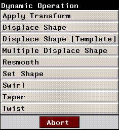

[N-World Contents] [Book Contents] [Prev] [Next] [Index]
MIME: Using Displacements
The PlayStation's ability to use MIME objects and displacement animation opens up new worlds for animators. This chapter contains a brief tutorial which illustrates how you can use these capabilities in your own animations.
Creating and Animating MIME Objects
This tutorial shows how to create a MIME object in which each displacement is associated with a button on the Sony PlayStation. You can only send single terminal objects to the PlayStation using this method, but the you can associate multiple displacements with the object. Only the first four vectors of a MIME object can be associated with control buttons on the PlayStation, but you can use any number of displacements to create a single vector. Objects can be attributed with any SonyPSX domain material.
This type of animation is good for objects that "squash" or "stretch," that should change shape when a button on the game controller is pressed.
For example, if you were animating a driving game, and wanted the car to "flatten" out when you pressed a button, you'd probably want to use a MIME object for the car, since you'd likely use displacements to animate the change in the car's shape.
Creating the Animation
Figure 3.1 shows the overall workflow pattern for creating a MIME animation.
Figure 3.1 Creating a MIME object animation
Create your Object
1. In N-Geometry, create a simple object.
- For this tutorial, create a cube and call it "cube".
Figure 3.2 Cube object in N-Geometry
Define any Displacements
2. Choose Bodies in the Element sensitivity menu.
3. (SHIFT-L) on the cube to select it.
4. (CLICK-L) on Make Displacement.
5. Make an Absolute displacement for the object.
- Since this will be the base displacement for our cube, let's name the displacement base.
Figure 3.3 Saving an absolute displacement
6. After you've specified a name, (CLICK-L) on Save Displacement State.
7. Displace the object to a pose you want to associate with one of the buttons on the game controller.
- For example, we can scale the object along an axis, simulating a "squashed" appearance.
8. Select Bodies from the Element sensitivity menu.
9. (SHIFT-L) on the Cube to select it.
10. (CLICK-L) on Axis Scale.
11. (CLICK-L) on Y to scale along that axis.
12. (CLICK-L) on Object Midpoint.
- Move the mouse left and right until the cube is squashed:
Figure 3.4 Squashed cube
13. (SHIFT-L) on the cube again.
14. (CLICK-L) on Make Displacement.
15. Make a Relative displacement for the object.
- Give the displacement a recognizable name-we'll use squash for this tutorial. Leave Source set to Previous state and State set to base. (This means that the current displacement is measured from a previous state named base-the base displacement we defined in step 5.)
Figure 3.5 Saving a relative displacement
16. After you've specified a name, (CLICK-L) on Save Displacement State.
- You've now set up the basic elements needed to create a MIME object. Displacements are described in more detail in the N-Geometry Reference Guide.
Create a Script to Animate the Object
17. Open N-Dynamics.

Figure 3.6 The N-Dynamics script editor
18. (CLICK-L) on the Script button.
- If there's a script already in the script editor, choose Create New Script. Either way, the Create New Script dialog box appears:
Figure 3.7 Creating a new script in N-Dynamics
19. Name the script, and specify 2 channels.
- Give script a name that embodies it's function, e.g. PSX-test.
20. (CLICK-L) on Do It.
- Your new script appears in the Script Editor.
Figure 3.8 The Script Editor with the new script
- The two blue bars spanning the Script Editor window are script channels. Channels contain parameter data which controls the behavior of objects over time in an N-Dynamics animation.
Define the Channels
21. (CLICK-M) on the first subchannel in the script.
- The Edit Action Properties menu appears. Use this menu to define the behavior of each channel in the script.
Figure 3.9 The Edit Action Properties submenu
22. (CLICK-L) in the Operation text box.
- The Dynamic Operations menu appears. This menu is divided into several sections, Each section contains a number of classes, which in turn contain individual dynamic operations.
Figure 3.10
23. (CLICK-L) on Shape in the Geometry section of the menu.
- Another menu appears, listing Shape operations:

Figure 3.11 The Shape Operations submenu
24. (CLICK-L) on the Displace Shape [Template] operation.
25. (CLICK-L) on Cube when the list of objects in N-Geometry is displayed.
Figure 3.12 Selecting an object
26. (CLICK-L) on "squash" when the list of relative displacements is displayed.
Figure 3.13 Selecting a displacement
27. (CLICK-L) on Do It to select "squash."
28. (CLICK-L) on "base" when the list of initial states is displayed, then (CLICK-L) on Do It.
Figure 3.14 Selecting the initial state
29. In the Edit Action Properties menu, (CLICK-L) on Do It.
The Displace Shape channel in your script now contains two subchannels:
Figure 3.15 The Displace Shape template creates the channels needed to animate displacements
30. (CLICK-L) on the triangle in the upper right corner of the Multiple Displace Shape Cube channel.
- This exposes the curve channel for the Multiple Displace operation.
Figure 3.16 Exposing curve data for the multiple displace channel
31. (CLICK-L) on the black triangle in the [SQUASH] (LINEAR) curve channel.
- This exposes the data inside the curve channel (including the location of any cues in the curve). Right now, the curve is linear, because we haven't defined any action yet.

Figure 3.17 The curve for the multiple displacement operation
32. Move the cursor over the middle of the channel and press "s" on the keyboard to insert or "set" a new cue.
- There are always cues at the start and end of a channel. By default, these are associated with the base displacement defined for the object.
Figure 3.18 Inserting a cue
- Because you've only defined one relative displacement for this object, only one curve channel is created; if you add more displacements (described below in the section "Adding Displacements," on page 3-20, additional curve channels are created for each selected displacement).
33. (CLICK-M) on the cue.
- A Dynamics slider appears. You'll use sliders to control parameter values.
Figure 3.19 The N-Dynamics slider
34. Move the slider back and forth until the value is approximately 1.0.
- This parameter essentially tells Dynamics how far to move between the base displacement and the relative displacement. A value of 1.0 means "go all the way". Note that the cube is displaced in the Geometry window. You can use the Geometry display to interactively select a value for this parameter, if you chose.
35. (CLICK-L) on Do It.
- The curve changes shape to show that the cue now has a value associated with it:
Figure 3.20 Modified cue
You're ready to animate your script.
Animate the Script
36. (CLICK-L) on the Animate button in N-Dynamics.
- The cube starts in its base state, then squashes as it approaches the middle of the script, then returns to its base state as it approaches the cue at the end of the animation.
37. (CLICK-L) on Playback to test your animation.
- Your animation is played back in real time in the playback window.
Setting up for PlayStation Express
38. (CLICK-M) in the second channel (at the bottom of the script).
39. (CLICK-L) in the Operations>Sony MIME Animation in the Dynamics section of the menu.
- The Edit Action Properties menu for Sony MIME Animation appears:
Figure 3.21 Sony MIME Animation operation Edit Action Properties menu
40. (CLICK-L) on Do It in the Edit Action Properties dialog box.
- Note in the script editor that there is now an Action Editor channel and a curve channel called [NUMBER1] (LINEAR):
Figure 3.22 Our script with the Sony MIME Animation channel inserted
41. Insert a cue in the MIME Animation channel at the same frame as the cue in the Multiple Displace Shape Cube channel.
- Your script should look something like this:
Figure 3.23 Script with Action Editor channel
- Note that the cues in both channels are aligned with each other.
You're now ready to send the animated data over to the Action Editor.
Create a new MIME Object in the Vector Editor
42. (CLICK-L) on the Vector Editor icon to open it.
Figure 3.24 The Vector Editor
43. (CLICK-L) on Create>Create New MIME Object
44. (CLICK-L) on the cube in the object list which appears.
- The name of the newly created object appears next to the Current MIME Object: field:
#<MIME-object Cube >
Create a New Action in the Action Editor
46. (CLICK-L) on the Action Editor icon to open it.
47. (CLICK-L) on Dyna>Action Generate.
- If you're sure you want to convert the script, (CLICK-L) on OK. (Your N-Dynamics script is not affected.)
Figure 3.25 Prompt asking whether to convert script
- The script animates at each cue specified in the Action Editor.
- For each cue in the Action Editor curve channel, a vector and wave are generated. Each of these vector/wave combinations is referred to as a subaction:
Figure 3.26 Action Editor with three newly generated subactions for script MIME-sample
48. Turn off the subactions that correspond to the cues at the beginning and end of the channel, since they are the same as the base vector (displayed at the top of the Action Editor window.
- To toggle a subaction on or off, (CLICK-L) on the check box next to it. A red check mark indicates that the subaction is active. Only the middle subaction should be active.
49. (SHIFT-L) on the cube in the N-Geometry window.
50. (CLICK-L) on Triangulate.
Figure 3.27 Cube with triangulated faces
Animate using Vector and Wave Data
51. (CLICK-L) on Animate>Animate Action.
- The cube is animated in the N-Geometry window using the vector and wave data in the Action Editor.
52. Under Animate, (CLICK-L) on Playback.
- The animation is played back in the MIMED Playback window.
Adding Displacements
You can associate as many as four displacements with buttons on the PSX game controller. The script we just created (MIME-sample) has only one displacement, squash. When you press one of the buttons on the game controller, the object being controlled will jump to that shape. The speed and degree to which the shape "jumps" is determined by the wave data for that subaction.
If you want to add additional displacements to the object:
53. Open N-Geometry.
54. Choose Points in the Element sensitivity menu.
55. (SHIFT-L) on a vertex in the cube.
- We'll move the vertex, creating a different shape.
56. (CLICK-L) on Move.
57. Move the vertex until you've achieved a distinct look.
Figure 3.28 Our new displacement
58. (SHIFT-L) on the cube.
59. (CLICK-L) on Make Displacement.
- Make another relative displacement, like you did in steps 14 through 16. Call the displacement pointy. Make sure you base the displacement on a previous state, called base.
Adding Vectors
60. Open the Vector Editor.
61. (CLICK-L) on Create>Create New Vector.
62. In the dialog box that appears, name the vector.
- It's usually a good idea to name the vector some variation of the displacement on which it's based. Let's use pointy:
Figure 3.29 Naming a new vector
63. (CLICK-L) on Do It.
64. (CLICK-L) on the base displacement that this relative displacement is based upon:
Figure 3.30 Choosing an initial displacement state
- Choose base since that's the name of the absolute displacement we defined earlier in N-Geometry.
65. Choose the displacement you want to make a vector out of.
- Choose pointy. You can create a vector that is based on multiple displacements; for now, let's work with just a single displacement.
66. (CLICK-L) on Do It.
67. Make sure the N-Geometry window is open.
68. Adjust the vector by moving the slider in the Vector Editor window left and right.
- The object is update each time you let up on the slider.
Figure 3.31 Modifying a vector
69. Slide the value to 1.00.
70. Under Save, (CLICK-L) on Save Current Vector.
- This saves the new vector.
71. Open the Action Editor.
72. Under Subaction, (CLICK-L) on Create Subaction.
- A list of vectors that the vector editor knows about appears.
73. (CLICK-L) on the vector you just created.
- Choose pointy.
74. (CLICK-L) on the wave you want to use for this subaction.
- A list of waves for other subactions in the action is displayed. Choose
MIME-Sample: 01 for this example; you can edit the value of the wave later.
- The new subaction appears below all the other current subactions in the action editor.
75. Under Animate, choose Animate Action.
- The cube animates again, using the vector and wave data in the Action Editor; note now that both displacements are active.
76. Under Animate, (CLICK-L) on Playback to review your animation.
You have now created a MIME object that can be downloaded to the Sony PlayStation and manipulate using the game controller.
Remember that only the first four subactions can be associated with buttons on the game controller; make sure that those four subactions are at the top of the list in the Action Editor. You can use the Reorder Subaction command under the Subaction menu to change the order of the subactions in the Action Editor.
Setting up the PC to Receive the Animation Data
You'll need to start the Sony software on the PC containing the PSX board set
77. On the PC, execute the following commands to start the PSX software.
cd c:\psx
psx
- When the software starts, a list of datasets that can be animated is displayed.
78. Type "n" to create a new dataset.
79. Enter the name for the new dataset at the prompt.
DATASET: cube-test
- The dataset is added to the list of MIME objects.
81. Locate the MIME object's number in the list, then enter it at the prompt, and press RETURN.
- The following commands are displayed:
Current DATASET: cube-test
1) Execute MIME-DATASET
2) Execute MIME-DATASET with WAVE-file
3) Playback TOD file
4) link/filt
5) Recv. files
6) QUIT
Please Input Number:
- This command starts the PC telnet application, and places the PC in FTP Server mode, where it can receive data sent over from the SGI.
Sending Data to the PlayStation
We're ready to send the animation and MIME object data to the PC from the SGI.
83. In The Action Editor, (CLICK-L) on Convert>Convert and Send Action.
- (CLICK-L) on the action you want to convert from the pop-up menu which appears:
Figure 3.32 Select an action to convert and send to the PC
84. In the dialog which appears, enter a directory for the Action Editor to write temporary files.
- During the conversion process, the Action Editor writes several temporary files to the specified directory. It's a good idea to specify the /tmp directory, or a subdirectory of /tmp, so that these temporary files will be deleted the next time you reboot your SGI.
Figure 3.33 Choose a directory for temporary files
85. When you (CLICK-L) on Done, the data are sent to the PC.
- Files are sent to the Action Editor Host specified in the N-Dynamics Options menu. When all the files have been sent the following prompt is displayed on the PC:
Finished sending data.
- (For more information about what files are written with the Convert and Send Action command, see "Convert and Send Action," on page 6-8. Other convert options are also described in the section"Convert," on page 6-8.)
86. Press ESC on the PC to exit from "receive" mode.
- The PSX menu appears again on the PC.
Animating the MIME Object
87. Press "4" to convert the .rsd file into a .tmd file.
- This is the format required for the PSX development kit.
88. Press "1" to animate the MIME object.
- Each of the first four vectors sent is associated with one of the buttons on the front of the game controller.
- You can use the PlayStation game controller to animate your object in real time across the range of it's MIME displacements.
- Note: Option 2 in the PSX menu, Execute MIME dataset with WAV file, plays your animation in a static loop. Use this option when you want to see your animation played back repeatedly. You cannot interact with these types of animations.
Exiting the PSX Program
89. Press "6" to exit from the current animation.
90. Press "Q" to exit completely from the PSX software.
Saving your Work
Make sure to save both the N-Dynamics script and the Action Editor data:
Saving your N-Dynamics Script
91. Open N-Dynamics.
92. (CLICK-L) on File>Save Script.
- Specify the directory in which you want to save your script and any objects it may reference. For more on saving scripts, see the N-Dynamics Reference Guide.
Saving the Action Editor Data
93. In the Vector Editor, (CLICK-L) on Group>Save Group.
[N-World Contents] [Book Contents] [Prev] [Next] [Index]
 Another fine product from Nichimen documentation!
Another fine product from Nichimen documentation!
Copyright © 1996, Nichimen Graphics Corporation. All rights
reserved.